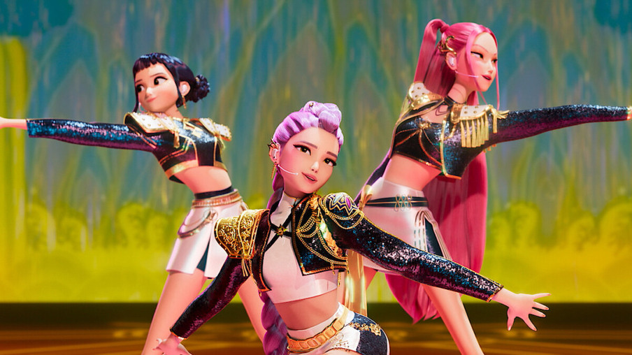

GUERREIRAS DO K-POP
Guerreiras do K-pop - Lista dos Personagens

Guerreiras do K-pop - Personagens
- Rumi - A líder destemida do grupo, uma mestre da dança e do rap, sempre com uma energia contagiante e sem medo de brilhar no palco.
- Mira - A rebelde do grupo, conhecida por sua confiança imbatível e sua voz poderosa. Sempre pronta para quebrar estereótipos.
- Zoey - A estrategista do time, com uma atitude ousada e um talento para a liderança. Sua personalidade forte e carisma atraem todos à sua volta.
- Jinu - A alma artística do grupo, com uma voz única e uma capacidade impressionante de criar novas tendências musicais e visuais.
- Soyeon - A mente criativa, responsável pelas músicas e coreografias, sempre se destacando por sua inteligência e inovação.
- Chungha - A incansável perfeccionista, uma verdadeira guerreira no palco, com uma habilidade de dança impressionante e um vocabulário vocal único.
- Irene - A líder estratégica e diplomática do grupo, sempre com uma postura calma e uma habilidade impressionante para lidar com qualquer situação.
- Jisoo - A mais carismática do time, conhecida por sua beleza e presença de palco inconfundível. Sua simpatia conquista todos ao redor.
- Momo - A melhor dançarina do grupo, com uma energia incontrolável que eleva qualquer performance. Sua habilidade técnica é imbatível.
- Yuju - A voz angelical que emociona a todos. Sua dedicação e habilidade vocal a tornam a essência do time, sempre buscando melhorar a cada dia.